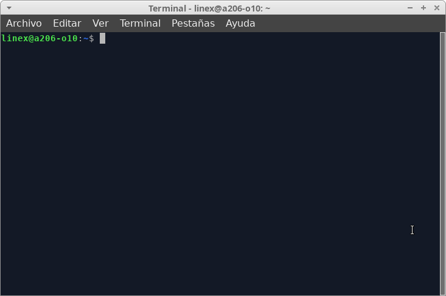

Proceso de instalación
Si vais a instalar VirtualBox en Ubuntu, nuestra recomendación es que lo hagáis desde los repositorios de VirtualBox. La instalación es sencilla y conseguiréis que se mantenga actualizado.
Vamos a realizar una instalación desde la línea de comandos. Por tanto, lo primero que debemos hacer es abrir un terminal de línea de comandos:

Para instalar VirtualBox en Ubuntu 22.04 desde los repositorios de VirtualBox, lo primero que debemos hacer es añadir el repositorio. Así que ejecutamos el siguiente comando como administrador:
| $ echo "deb [arch=amd64] http://download.virtualbox.org/virtualbox/debian jammy contrib" | sudo tee -a /etc/apt/sources.list.d/virtualbox.list |
Como podéis ver, hemos especificado que se debe usar la arquitectura amd64. Ésto es porque no existen paquetes para arquitecturas de 32 bits.
A continuación, añadimos la clave pública del repositorio al anillo de claves:
| $ wget -O- https://www.virtualbox.org/download/oracle_vbox_2016.asc | sudo gpg --dearmor --yes --output /usr/share/keyrings/oracle-virtualbox-2016.gpg |
A continuación, actualizamos índices de los repositorios:
| $ sudo apt update |
Y, por último, instalamos el paquete:
| $ sudo apt -y install virtualbox-7.0 |